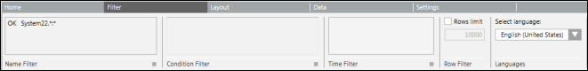
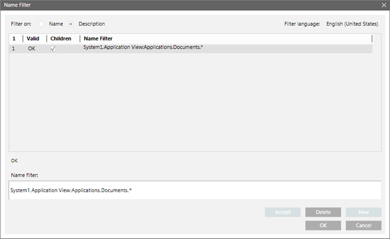
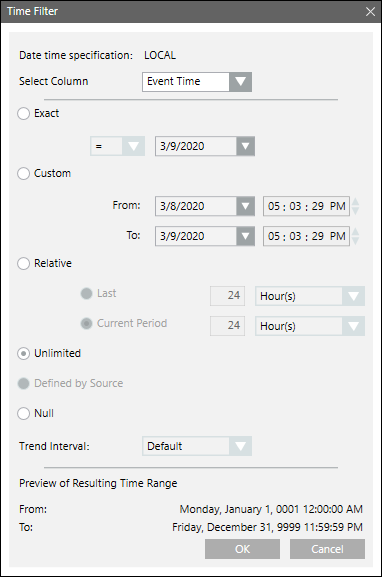

Filter Tab
The Filter tab allows you to define and apply different filters for data retrieval.

Name Filter
The Name filter allows you to filter data based on the Name or Description of System Browser objects. You can apply a Name filter to a table or plot.
When an Activities, Events, Active Events, BACnet Alarm Summary, BACnet Enrollment Summary, BACnet Event Information, and/or Objects table is inserted in the Report Definition, a valid Name filter “CurrentSystemName.*:*” is added by default, where CurrentSystemName is the name of the system in which report definition is created or opened. This default Name filter can be replaced with a * to fetch the data from all the views of all the configured systems in a distributed environment. You can add Name filters from the Name Filter dialog box.
Name Filter Dialog Box
Use the Name Filter dialog box to add, edit and delete Name filter conditions. The added Name filter is also added to the Name Filter group box when the dialog box is closed.

Name Filter Dialog Box Components | |
Field | Description |
Name | Creates a Name filter according to the object name displayed in System Browser. |
Description | Creates a Name filter according to the object description displayed in the System Browser. A message in red displays below the Name Filter list if the filter is invalid. |
Name Filter List | Lists all the Name filters and displays whether the applied filter is valid or not. The Name filter list contains four columns. |
Name Filter | Displays the filter that is currently selected in the Name Filter list. You can type a name into this field. The valid format for entering a Name filter is SystemName.ViewName:Hierarchy.*, where.* is for displaying the child nodes of the selected object. For example, System1.Application View.Site.Building.Floor1.* |
Validate | Checks whether the applied filter is valid or not. |
Accept | Accepts the change made to a Name filter. This button is unavailable until a change is made to an existing Name filter. |
New | Adds a new Name filter to the Name Filter list. This button is unavailable until a Name filter is typed in the Name field or if any existing Name filters are selected in a Name Filter list. |
Delete | Deletes an existing Name filter. This button is unavailable until one or more Name filters is selected in the Name Filter list. |

NOTE 1:
For Trends table, Trends plot, and Graphics plot no default Name filter is added. You can apply only single Name filter.
NOTE 2:
For Trends table, you can drag Offline, Online Trend Logs, and Trend View Definitions.
Wildcard Characters in Name Filters (For Single Systems):
You can use wildcard characters (* and ?) in a Name filter. The following examples will help you in using these characters:
- To display the details of only Analog Output objects of a device, Dev 1 in a report, specify the Name filter as "System1.ManagementView:ManagementView.FieldNetworks.BAC1.Hardware.Dev1.Local_IO.AO*". When you run the report, the details of all the Analog Output objects belonging to the Dev 1 device will display.
- To display the details of only Analog Output objects of all system devices present in System 1 in a report, specify the Name filter as "System1.ManagementView:ManagementView.FieldNetworks.BAC1.Hardware.Dev*.Local_IO.AO*". When you run the report, the details of all Analog Output objects belonging to all devices in the system with names starting with Dev will display.
- To display the details of Analog Output objects with names starting from Analog Output 11 through Analog Output 19 of device Dev 1 in a report, specify the Name filter as "System1.ManagementView:ManagementView.FieldNetworks.BAC1.Hardware.Dev1.Local_IO.AO_1?". When you run the report, the details of Analog Output objects with names starting from AO_11 through AO_19 belonging to device Dev 1 will display. The assumption here is that there is a device Dev1 in your system that has Analog Output objects with names starting from AO_11 through AO_19.
- If you want to display the details of Analog Output objects with names starting from Analog Output 11 through Analog Output 19 of all devices with names in the range of 21 through 29 in a report, specify the Name filter as "System1.ManagementView:ManagementView.FieldNetworks.BAC1.Hardware.Dev2?.Local_IO.AO_1?". When you run the report, the details of all analog output devices with names starting from AO_11 through AO_19 that are present in devices Dev21 through Dev29 will display. The assumption here is that there are devices in your system having names Dev 21 through Dev 29 and there are Analog Output objects having names AO_11 through AO_19 in those devices.
Wildcard Characters in Name Filters (For Distributed Systems)
- To display the details of all the Analog Output objects of all system devices present in all the configured systems in a distributed environment, specify the following Name filter in the report definition, “*.ManagementView:ManagementView.FieldNetworks.*.AO*”. When you run the report, the details of all the Analog Output objects belonging to all the devices in all the systems configured in a distributed environment will display.
However, when you apply wild cards to a Name filter, the report execution may be slower. Therefore, if you are processing an operating procedure form, report steps, or Log Viewer on a system, reports executed on this system must have more specific Name filters to achieve optimum performance.
Condition Filter
A Condition filter defines a filter expression that is composed of one or more filter expressions.
Condition Filter Condition
A Condition filter condition is composed of:
- Column name (Condition Name)
- Operators
- Condition value
Examples of Condition Filter Expressions
The following list contains some valid Condition filter expressions:
- Status = “Alarm”
- Status = {“Alarm”; “Alarm Acked”; “Alarm Unacked”}
- Alarm Value = {12; “Text”}
- Time of last Change = “Current day”
NOTE:
You cannot apply the Condition filter to Plots.
The Condition filter also allows you to create complex filters and conditions using mathematical and logical operators, and wildcard characters. The following operators are supported:
- Mathematical Operators: Equal to (=), Not Equal to (<>), Greater than (>), Less than (<), Greater than Equal to (>=), Less than Equal to (<=), and Contains Operator (←).
- Logical Operators: AND, OR, NOT
- Wildcard Character: Asterisk (*)
NOTE: The Contains Operator (←) is used to filter data in a column that supports display of multiple values in a single cell.
Following is an example of columns having the possibility to display multiple values in a single cell.
Table Name | Columns with possibility to display multiple values in a single cell |
Objects | Related Items Type |
Activities | Value |
Active Events | Available Commands |
Condition Filter Syntax
When you are creating a Condition filter, you must know the data type of the property for which you want to apply the filter.
Following are some examples which will help you create Condition filters without syntax errors.
- If property displays text data, for example string or enumeration, then the value must be enclosed within double quotes.
- ‘[Current_Priority]’ = “Priority - 16”
- ‘Object Description’ = “Analog Output 1”
- ‘[Event_State]’ = “Normal”
- '[Present_Value]' = "INACTIVE"
NOTE: The values of some properties such as [Current_Priority] are referenced in text groups.
Therefore, whenever you are assigning values for such properties, you must refer to the respective text groups.
In order to refer to the text groups in the Management View, you must have an Engineering license.
In the absence of an Engineering license, you will have to run the report to find out the appropriate values for such properties. - If property displays values in the date time format, then the value must be in date time format configured in Windows on the server. Date must be in the short date format, time in the long time format (24 hours).
- ‘Main Value’ = 3/13/2014 16:04:25 (assuming that the date format on the server is M/d/yyyy)
- If property displays Boolean data, for example. TRUE, FALSE, then the value must be enclosed in double quotes
- '[Stop_When_Full]' = "True"
- ‘[Log_Enable]’ = “False”
- If property displays numeric data, for example,. 54.11, 25, -20, then the values must be specified as follows:
- '[Present_Value]' = 54.11
- '[Present_Value]' >= 25
NOTE: The decimal separator will be according to your Windows Regional and Language settings. - If property displays bit string, then the value must be enclosed by double quotes
- '[Status_Flags]' <- "Fault"
- ‘[Event_Enable]’ <- “To Fault”
- ‘[Limit_Enable]’ <- “Low Limit Enable”
The Condition filter is applicable only to Objects, Active Events, Activities, Events, Event Details, and Trends tables.
When you select any of these tables, you can display the Condition Filter dialog box.
For the Objects table, you can add a conditional filter that specifies the acceptable age of the data on which the filter is applied. For example, if you specify 0 as the acceptable age, the filter is always applied on the latest data from the field system. If you specify 2 weeks, the age of the data with the cache is checked. If the data is older than 2 weeks it is obtained from the field system, else the data from the cache is used for filtering. This setting helps in the faster report generation.
Condition Filter Dialog Box
This dialog box allows you to specify the condition to filter the report data. You can apply the Condition filter on all columns except columns of type date/time.

Condition Filter Dialog Box Components | |
Field | Description |
Type filter | Displays only when an Objects table is selected in the Report Definition. Allows you to enter the object type description on which you want to filter the object types to be displayed in the Type drop-down list. For example, if you want the Type drop-down list to display all BACnet object types, enter BACnet as the type filter. |
Type | Displays only when an Objects table is selected in the Report Definition. It lists all the object types available in the system. You must select the object type whose columns are to be displayed in the Available Columns list. |
Load | Click this button to populate the Available columns list with the columns corresponding to the selected object type in the Type list. |
Available columns | Lists all the available columns of a selected table.
|
Operators List | Lists all the operators associated with a specific column selected in the Available Columns list. |
Values List | Lists all the values associated with a specific column selected in the Available Columns list. Moreover, you can select multiple values by pressing CTRL or SHIFT and selecting different values. |
Filter expression field | Displays the filter expression. You can edit a filter expression in this field. |
Read all data from field system | Displays only when an Objects table is selected in the Report Definition. If this option is selected the objects data for filtering is always read from the field system. |
Read all data from process image | Displays only when an Objects table is selected in the Report Definition. If you select this option, the objects data is always read from the cache. |
Read data from field system older than | Displays only when an Objects table is selected in the Report Definition. It allows you to specify the acceptable age of the data on which the filter is applied. If you select this option, the value entered is compared with the age of the data in the cache. If the data in the cache is older than the value entered, it is obtained from the field system; otherwise data from the cache is used for filtering. |
New/Update | Allows you to add or update a filter expression. Update is enabled only when a valid filter expression is added or modified in the filter expression field. |
AND/OR | These are logical operators that allow you to combine filter expressions and create complex filters. This button is unavailable until a filter expression is added to the filter expression field. |
"( ) " | Allows you to group filter conditions, which define the order of their evaluation. These brackets are unavailable until a filter expression is added to the filter expression field. |
Time Filter
The Time Filter group box and the dialog box launcher icon is enabled only when you select a table or plot in a Report Definition for which the Time filter is applicable.
The Time filter allows you to specify time as a filter for retrieving records.

Time Filter Dialog Box Components | |
Field | Description |
Date time specification | Shows LOCAL, when the Date/Time in UTC format check box on the Home tab is not selected. |
Select Column | Displays only when an Events, All Logs, or Activities table is selected in the Report Definition. The entries in the drop-down list depend on table selected and allow you to filter information accordingly. Events: All Logs: Activities: |
Exact | Allows you to filter data based on the exact date specified. |
Custom | The Custom option allows you to set the date and time as per your requirement. Selecting the Custom option enables the From/To field. The Todate should always be greater than From date. If the To date is less than the From date, then the To field is highlighted in red and an error message displays on mouse-over. |
Relative | Relative has two options: Last and Current Period. |
Unlimited | Default selection. Allows you to retrieve all records. |
Defined By Source | This option only displays for Trend objects. It sets the date and time to what you have defined for the selected Trend View Definition. |
Null | Allows you to retrieve records with Null value. |
Trend Interval | Allows you to select the interval in which the trend data has to be displayed. The Default entry in the drop-down list, shows values of the trend data, as logged in the database. If any other interval is selected, it will be applied on the processed trend data such that the time is aligned to the hour. The values of multiple trended points are displayed, based on the selected Trend Interval. |
Preview of Resulting Time range | Displays the resulting time range for the options selected in the Time filter dialog box. For example, if the present time is 02/06/2012 4:37 PM, then for the selection current 24 hrs the Preview of Resulting Time Range displays absolute time range for this selection as follows: |
Row Filter
Allows you to set the maximum number of rows of a table to be displayed at runtime.
Languages Filter
Allows you to set the language for a Report Definition. You can configure filters (Condition and Name) in the selected language.